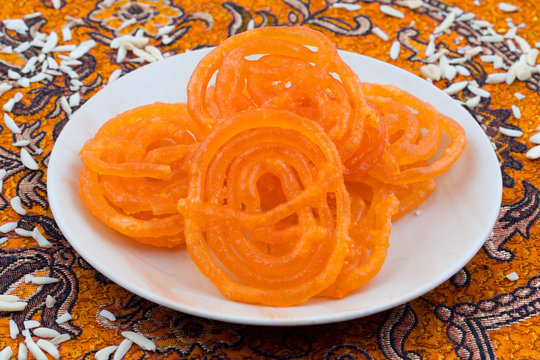

Jalebi Recipe

Description
Indulge in the sweet and syrupy goodness of Jalebi. This popular Indian dessert features deep-fried swirls of batter soaked in saffron-infused sugar syrup, creating a delightful treat for your taste buds.
Ingredients:
- 1 cup all-purpose flour
- 1 cup yogurt
- 1/2 teaspoon baking soda
- 1 cup sugar
- 1 cup water
- A pinch of saffron strands
- 1/2 teaspoon cardamom powder
- Ghee or oil for frying
- Chopped pistachios or almonds for garnish
Steps:
- In a bowl, mix all-purpose flour, yogurt, and baking soda to make a smooth batter. Let it ferment for a few hours or overnight.
- In a saucepan, combine sugar and water to make the sugar syrup. Add saffron strands and cardamom powder. Simmer until it reaches a slightly sticky consistency.
- Heat ghee or oil in a pan for frying.
- Pour the batter into a squeeze bottle or a piping bag with a small nozzle.
- Squeeze the batter into hot oil in a spiral or pretzel shape. Fry until golden brown and crisp.
- Remove the fried jalebis and immediately dip them into the warm sugar syrup.
- Let them soak for a minute, ensuring they are well coated with the syrup.
- Garnish with chopped pistachios or almonds.
- Serve the sweet and syrupy Jalebi warm and enjoy the delightful sweetness!
Home